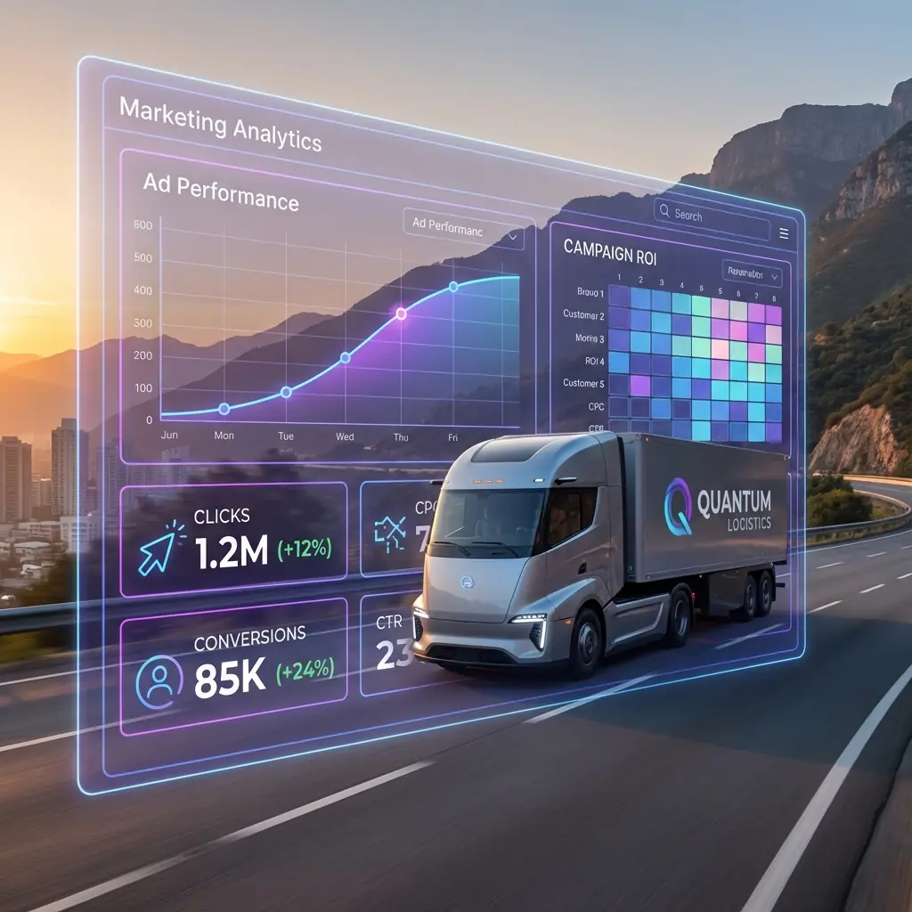

Consumer-heavy traffic
Commercial shippers sit alongside consumers, job seekers, drivers, and one-time movers. Campaign structure has to keep those audiences apart.
We run Facebook and Instagram ads that help logistics companies reach the right people and bring in better leads.

Facebook and Instagram can create awareness at scale, but platform algorithms need the right audience, creative, qualification, and sales signals to find genuine logistics buyers.
Commercial shippers sit alongside consumers, job seekers, drivers, and one-time movers. Campaign structure has to keep those audiences apart.
Useful job-title and interest signals are incomplete, so first-party data, geography, exclusions, and careful audience construction matter.
The same freight message loses attention quickly. New hooks, formats, and proof need to be tested before performance begins to decay.
Native forms can generate volume without fit. Qualification must account for service, location, shipment profile, and commercial intent.
Every engagement moves through five visible stages, with clear decisions, deliverables, and reporting from the first audit onward.
We review audiences, creative, Pixel and Conversions API signals, forms, landing pages, and sales feedback.
We define buyer segments, offers, campaign objectives, exclusions, budget, and the route to a qualified conversion.
Campaigns launch with creative variants, lead forms or landing pages, complete tracking, and deliberate budget controls.
We refine audiences, placements, creative, forms, and pages using conversion signals and sales team feedback.
You see what changed, what produced qualified demand, and what we recommend testing next.
The goals follow the opportunity—not a preset package.
Targeting combines platform signals with the data your business already owns.
Every ad connects a relevant freight offer to a clear, qualified next step.
What we track combines platform activity with commercial outcomes.
We connect campaign data with sales feedback so performance means more than a lower cost per form submission.
Measure spend against opportunities that match your services and market.
Understand which audiences and creative angles generate useful conversations, not just forms.
Use sales outcomes to improve targeting, creative, forms, and campaign direction.
We build social campaigns around how transportation services are bought and sold—not generic audience presets or consumer lead-generation assumptions.
Creative can reflect DOT and FMCSA operating context, service authority, insurance, and claims you can substantiate—subject to your team’s approval.
Audience and offer strategy distinguishes mode, lane, equipment, urgency, geography, and fit instead of treating every freight buyer the same.
We separate repeat commercial shipper demand from one-off household moves, parcel questions, job searches, tracking requests, and rate shoppers.
A qualified opportunity should match your capabilities—whether that is brokerage, warehousing, fulfillment, drayage, last-mile, or specialized transport.
Your proposal is based on target market, campaign complexity, available audience and conversion data, creative needs, and a viable media budget.
Yes, when the offer, audience, creative, and qualification path are built for a specific commercial buyer. We optimize around useful sales conversations, not maximum form volume.
We combine first-party data, CRM lists, available job and industry signals, location, service fit, exclusions, and lookalikes when the source audience is large and reliable enough.
There is no universal minimum. We recommend a viable range after reviewing audience size, geography, creative requirements, offer strength, and the amount of data needed to make sound decisions.
Yes. The engagement can include freight-specific messaging, static creative, short-form video direction, offer development, and a structured testing plan.
Either can work. Native forms reduce friction, while landing pages provide more context and qualification. We select and test the route that best fits the offer and sales process.
Yes, where your website and systems support them. We can also connect forms, calls, CRM stages, and offline events so optimization is informed by lead quality.
Let’s identify the strongest audience, offer, and creative opportunity in your market.
Plan your Facebook campaign